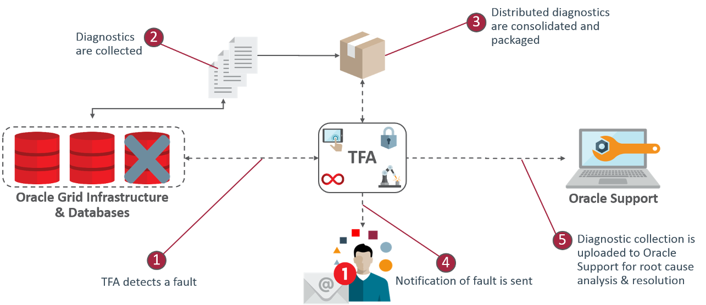

15 Automatic Diagnostic Collections
Oracle Trace File Analyzer monitors your logs for significant problems, such as internal errors like ORA-00600, or node evictions.
- Collecting Diagnostics Automatically
This section explains automatic diagnostic collection concepts. - Configuring Email Notification Details
Configure Oracle Trace File Analyzer to send an email to the registered email address after an automatic collection completes.
15.1 Collecting Diagnostics Automatically
This section explains automatic diagnostic collection concepts.
If Oracle Trace File Analyzer detects any problems, then it carries out the following actions:
-
Runs necessary diagnostics and collects all relevant log data at the time of a problem
-
Trims log files around the time of the problem so that Oracle Trace File Analyzer collects only what is necessary for diagnosis
-
Collects and packages all trimmed diagnostics from all nodes in the cluster, consolidating everything on a single node
-
Stores diagnostic collections in the Oracle Trace File Analyzer repository
-
Sends you email notification of the problem and details of diagnostic collection that is ready for upload to Oracle Support
Figure 15-1 Automatic Diagnostic Collections
Description of "Figure 15-1 Automatic Diagnostic Collections"
Oracle Trace File Analyzer uses a flood control mechanism. Repeated errors do not flood the system with automatic collections.
Identifying an event triggers the start point for a collection and five minutes later Oracle Trace File Analyzer starts collecting diagnostic data. Starting five minutes later is to capture any other relevant events together. If events are still occurring after five minutes, then diagnostic collection continues to wait. Oracle Trace File Analyzer waits for 30 seconds with no events occurring, up to a further five minutes.
If events are still occurring after 10 minutes, then a diagnostic collection happens. A new collection point starts.
After the collection is complete, Oracle Trace File Analyzer sends email notification that includes the location of the collection, to the relevant recipients.
If your environment can make a connection to oracle.com, you can then use Oracle Trace File Analyzer to upload the collection to a Service Request.
$ tfactl set autodiagcollect=ON|OFFAutomatic collections are ON by default.
Table 15-1 Log Entries that Trigger Automatic collection
| String Pattern | Log Monitored |
|---|---|
|
System State dumped |
Alert Log - Oracle Database Alert Log - Oracle ASM Alert Log - Oracle ASM Proxy Alert Log - Oracle ASM IO Server |
|
|
Alert Log - CRS |
Related Topics
15.2 Configuring Email Notification Details
Configure Oracle Trace File Analyzer to send an email to the registered email address after an automatic collection completes.
To configure email notification details: